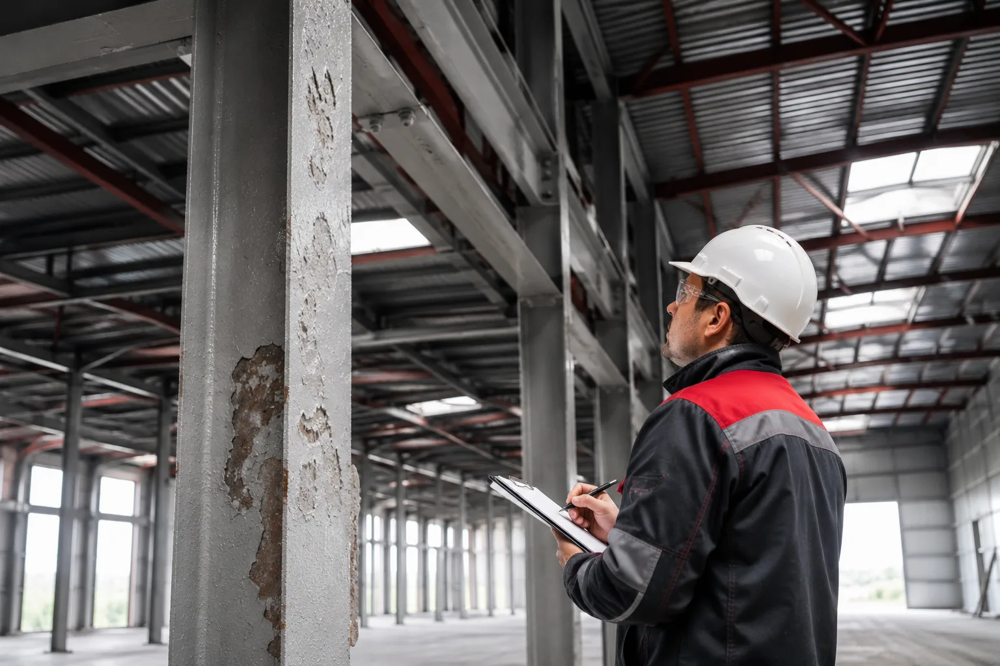

Типичные дефекты огнезащитного покрытия металла: почему появляются трещины и отслоения
Разбираем отслоение огнезащитной краски, трещины, вздутия, коррозию под покрытием и порядок действий при обнаружении повреждений.
Разбираем отслоение огнезащитной краски, трещины, вздутия, коррозию под покрытием и порядок действий при обнаружении повреждений.

Огнезащитное покрытие металлоконструкций редко вызывает вопросы сразу после нанесения. Поверхность выглядит ровной, толщина соответствует проекту, а работы считаются завершенными.
Проблемы обычно появляются спустя месяцы или даже годы эксплуатации. На покрытии возникают трещины, отдельные участки начинают отслаиваться от металла, появляются вздутия или следы коррозии.
Многие считают такие дефекты исключительно косметическими недостатками. На самом деле повреждение огнезащитного слоя может привести к снижению эффективности всей системы защиты металлоконструкций.
Разберем наиболее распространенные дефекты огнезащитного покрытия и причины их появления. Если нужно восстановить систему защиты на объекте, посмотрите услугу огнебиозащиты конструкций.
Огнезащитное покрытие работает как защитный барьер между металлом и высокой температурой при пожаре.
Если покрытие повреждено, его способность выполнять свою функцию может существенно снизиться.
Особенно опасны дефекты на несущих металлоконструкциях производственных зданий, торговых центров, складов и паркингов.
Поэтому регулярный визуальный контроль считается обязательной частью эксплуатации объекта.
Отслоение считается одним из самых распространенных дефектов огнезащитного покрытия металла.
Внешне проблема выглядит как отделение покрытия от металлической поверхности. Иногда покрытие начинает отслаиваться по краям, а иногда целыми участками.
Причины могут быть разными:
Если покрытие потеряло сцепление с металлом, локальный ремонт возможен не всегда. В некоторых случаях приходится полностью восстанавливать защитный слой на поврежденном участке.
Трещины встречаются не реже отслоений.
Небольшая сетка микротрещин может долго оставаться незаметной. Однако со временем повреждения увеличиваются и начинают пропускать влагу.
Наиболее частые причины появления трещин:
Особенно внимательно стоит относиться к трещинам возле сварных соединений и узлов крепления, где нагрузки на конструкцию обычно выше.
Иногда поверхность начинает подниматься отдельными участками, образуя пузыри.
Чаще всего такая проблема связана с попаданием влаги под покрытие либо с недостаточной подготовкой основания.
Если вскрыть поврежденный участок, под ним нередко обнаруживаются следы коррозии металла.
Подобный дефект нельзя игнорировать, поскольку процесс разрушения продолжается даже при отсутствии видимых внешних изменений.
Одна из самых опасных проблем — скрытая коррозия.
Снаружи покрытие может выглядеть относительно целым, но под ним уже начинается разрушение металла.
На наличие проблемы обычно указывают:
Если коррозия обнаружена, обследование необходимо проводить не только на поврежденном участке, но и на соседних элементах конструкции.
Во время эксплуатации металлоконструкции часто подвергаются случайным ударам, вибрациям и другим внешним воздействиям.
В результате на покрытии появляются:
Даже небольшой поврежденный участок становится потенциальной зоной проникновения влаги и развития коррозии.
Поэтому такие дефекты желательно устранять как можно раньше.
Не каждое повреждение требует полной замены покрытия.
Однако существуют признаки, при которых обследование откладывать нельзя:
| Дефект | Возможные последствия |
|---|---|
| Отслоение покрытия | Потеря адгезии и защитных свойств |
| Глубокие трещины | Попадание влаги к металлу |
| Вздутия | Коррозия под покрытием |
| Сколы до металла | Ускоренное разрушение основания |
| Следы ржавчины | Потеря защитной функции |
Если дефект затрагивает металл или распространяется на значительную площадь, рекомендуется провести техническое обследование конструкции.
Большинство проблем возникает задолго до начала эксплуатации.
Основные причины закладываются еще на этапе выполнения работ.
Снизить риск появления дефектов помогают:
Практика показывает, что своевременное устранение небольших повреждений обходится значительно дешевле полного восстановления системы огнезащиты.
Первое правило — не пытаться оценить состояние покрытия только по внешнему виду.
Даже небольшой участок отслоения может свидетельствовать о более серьезной проблеме.
При обнаружении трещин, вздутий или следов коррозии рекомендуется:
Трещины огнезащитной краски, отслоение покрытия, вздутия и коррозия относятся к наиболее распространенным дефектам огнезащитных систем. Большинство проблем развивается постепенно и долго остается незаметным.
Регулярный контроль состояния покрытия позволяет вовремя обнаружить повреждения и избежать серьезных затрат на восстановление металлоконструкций. Если дефект уже затронул основание или сопровождается признаками коррозии, обследование лучше не откладывать.